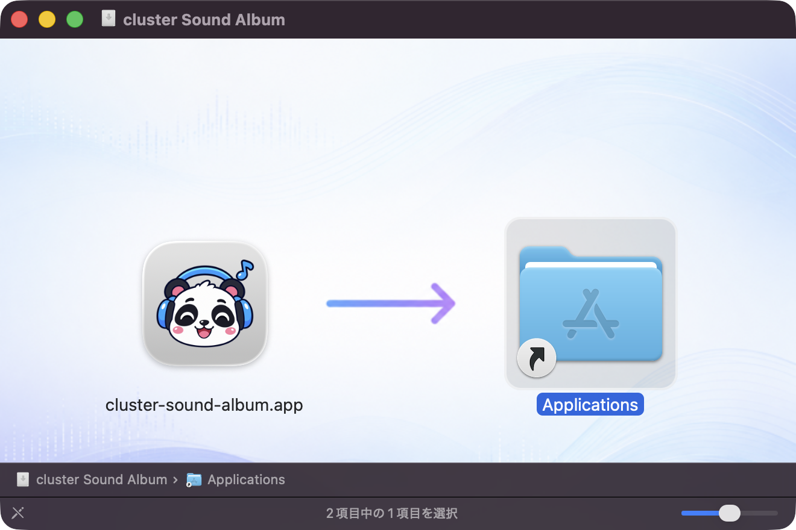
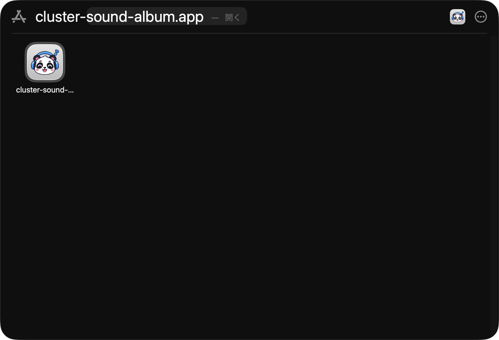
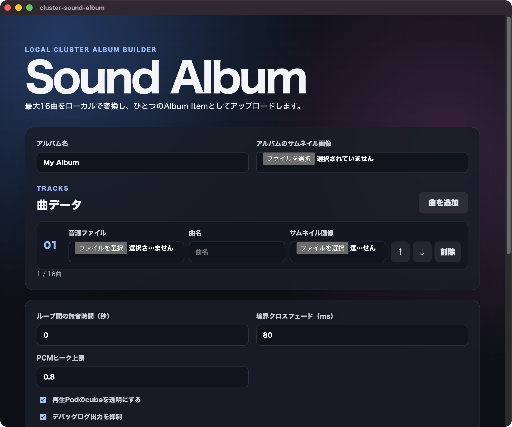

Installation Guide
cluster Sound Album
macOS版インストール手順書
対象：macOS
全7ステップ
ダウンロードしたディスクイメージからアプリをインストールし、初回起動時のセキュリティ許可を行います。
1
アプリをApplicationsへコピーする
ダウンロードしたディスクイメージ（DMG）を開き、cluster-sound-album.app を「Applications」フォルダへドラッグします。

アプリアイコンを右側の「Applications」へドラッグします。
2
アプリを起動する
「アプリケーション」フォルダを開き、コピーした cluster-sound-album.app をダブルクリックします。

Finderの「アプリケーション」からアプリを起動します。
これでインストールは完了です
次回からは「アプリケーション」フォルダの cluster-sound-album.app をダブルクリックするだけで起動できます。
7
アプリの画面が表示されることを確認する
「Sound Album」の画面が表示されたら、正常に起動しています。

画面例：cluster Sound Albumのメイン画面